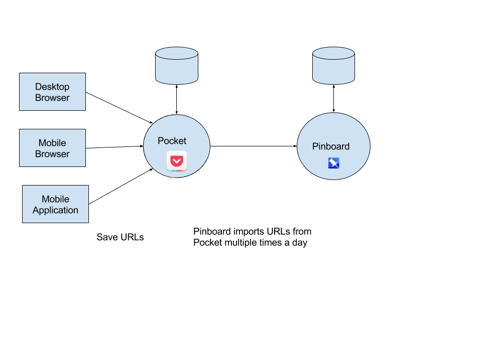

My Bookmarking Workflow¶
Here is how I set aside links to read them when I have time and classify them with tags to find them easily later on.
Introduction¶

My bookmarking workflow is the following:
- Collect Link (URL)
- Find tags for the link
- Tag the link
- Search
- Read
- Listen
The bookmarking toolset I use both on Mac and iPhone is composed of 2 online services: Pocket and Pinboard:
Collect with Pocket¶
When I find a Web page interesting at first glance, I add it to Pocket without taking too much time reading it thoroughly at this stage. This can also be a link in Gmail that I want to explore later on. The goal is here to send links to Pocket as quickly as possible. Even if Pocket offers the ability to tag links at this stage, I generally do not do this for two reasons. First off, because Pinboard unfortunately cannot import tags from Pocket. The second reason is to make this initial step of the flow as fast and smooth as possible. Remember it will occur multiple times a day and must not be a showstopper. You probably do not want nor can read at this stage, all the pages you ultimately intend to bookmark. One of the great strength of Pocket is that you push many links to it in order to read them later on (hence the original name readitlaterlist.com). Use it this way and you will thank yourself. What you put in Pocket will be ready for you to read or even listen to when you decide to do so. The 2 pluses of Pocket are in my opinion: Collect fast, read asynchronously. Pocket (and Pinboard) give you the ability to decouple collecting an URL from reading the coresponding Web page.
Pocket is a web service where you store your read later list. I use its desktop browser plugins and mobile application to save the URL of interesting web pages that I want to tag, read or listen to later when it is convenient for me to do so. What's more Pocket allows me to browse them offline.
- The desktop browser plugin adds a Pocket button that saves the current page for later.
- The mobile application for iOS adds the Pocket Share extension, which is then available in all applications where you can share a link to Pocket.
- What's more, many mobile applications can "Save to Pocket" natively. This is the case for Inoreader for instance, a cool iOS app I use to read my RSS feeds, when I want to clip an interesting blog post I can do that from within Inoreader itself without even using the Pocket Share extension.
For those of you more visually inclined here is a review of Pocket by Steve Dotto.
{{< youtube zGeF5XaQ2tU >}}
Tag with Pinboard¶
I configured Pinboard to automatically import new links from Pocket several times a day. Hence, every time I save a link to Pocket it also ends up in Pinboard.
The second step of my workflow takes place in Pinboard where I open each link to make a quick read (introduction, title of the main sections, text in bold). Once I get a grasp of what the web page is about, I choose then set tags to classify it. I may also remove links that I have already read in Pocket or do not want to archive.
Choose tags¶
Here are my guiding principles for choosing tags:
-
Use the tags you would use the most intuitively to search for the link you are tagging. Indeed those are the ones you will use in the end when you do not rembember all the super extra consise and to the point tags you took so long to find. I'm not saying that it is worthless to search for a tag, you will need to do that at first, but keep in mind the goal of a tag is to be used to search for and find a link quickly.
Rule of thumb: Taking the time to discover which tags you would use to search for a link will greatly help you find ad-hoc tags. Some of them stick very easily in your muscle memory, others don't. Keep in the mind that the ultimate goal is to find not to have the ultra top notch tags. * Prefer singular over plural for nouns * Use all lowercase words (easier and faster to type)
Depending on your bookmarking service, search may be case insensitive as this is the case for Pinboard. But as online bookmarking services may come and go, you may have one day to migrate to a new one which does not offer this functionality. I do not follow this principle only for acronyms like
HTML,HTTPandJSONfor instance. -
Use verbs in the present tense, for instance use
learninstead oflearning - Use multiple words instead of a single compound word (even those with a dash
in between words).
Use
web+siteinstead ofwebsiteorweb-site,search+engineinstead ofsearchengineorsearch-engine - Define a core set of tags that is meaningful for you and stick to it.
For instance
listwhen a web site or a page contains a list of things,mutipleinstead ofseveralsearch,findspeed,fast,slow. -
Tag consistently.
This last piece of advice will help your future self searching for a link when you can rely on a well known set of core tags. This is the reason why you need to experiment and adjust your taxonomy over time according to your domain and usage.
Pinboard¶
Pinboard is a paid online bookmarking service. I switched to Pinboard because del.icio.us shifted gears completely when Yahoo sold it to AVOS, it morphed into something that was no longer useful nor efficient for me. Ultimately, it was way too slow.
I can tag links with both Pocket and Pinboard, but I find it considerably easier with Pinboard which has been conceived with this in mind from day one and offers far more tagging related features as you can see in this review of Pinboard by Rhinofeed.
Pinboard Review - Part 1 {{< youtube mqphSmguiFY >}}
Pinboard Review - Part 2 {{< youtube QFTjdEUrYCk >}}
Back in 2010, Leo Laporte and Amber MacArthur interviewed Maciej Ceglowski the creator of Pinboard. You can watch the interview on Youtube
Read¶
I open the links afterwards in Pinboard, when I have plenty of time to read the the bookmarked web pages entirely this time. This gives me the opportunity to refine existing tags or add new ones.
Listen¶
The reason why I keep using Pocket as an intermediary in between me and Pinboard is two folds.
First off, it is a browser plugin which makes adding a link a breeze. It is fast, just one click away. There is no pop up that takes time to load, (nor form fields to fill in) and no submit button to press, as this is the case when I bookmark a page with Pinboard's bookmarklet.
Pocket also has a key feature that makes it shine: Text To Speech (TTS). It can read out loud saved web pages. I use this often during my daily commute to keep apprised of interesting news and tech articles. I pick an article from Pocket read later list,click a button and boom! I'm both learning something that I'm passionate about but I also improve my understanding of the English language while listening to a realistic English voice Alex. I guess it is based on the built-in TTS functionality of iOS, but adds more on top of that, it scrolls the page to hightlight the current word and make sure it is always visible.
This is the only thing that keeps me from using Pinboard exclusively, such a handy functionality!
Search¶
You can use Pinboard to search for links by tags, title, description or a combination of those. The search is case-insensitive and matches partial words.
Conclusion¶
I hope you picked something new to discover in this article whether it is a tool or a way to collect and process your bookmarks that may improve your workflow.